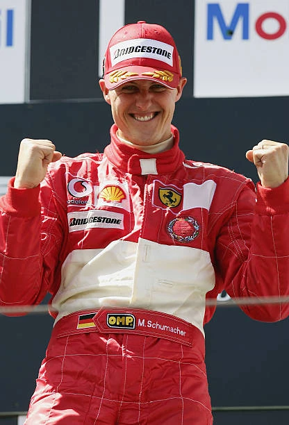
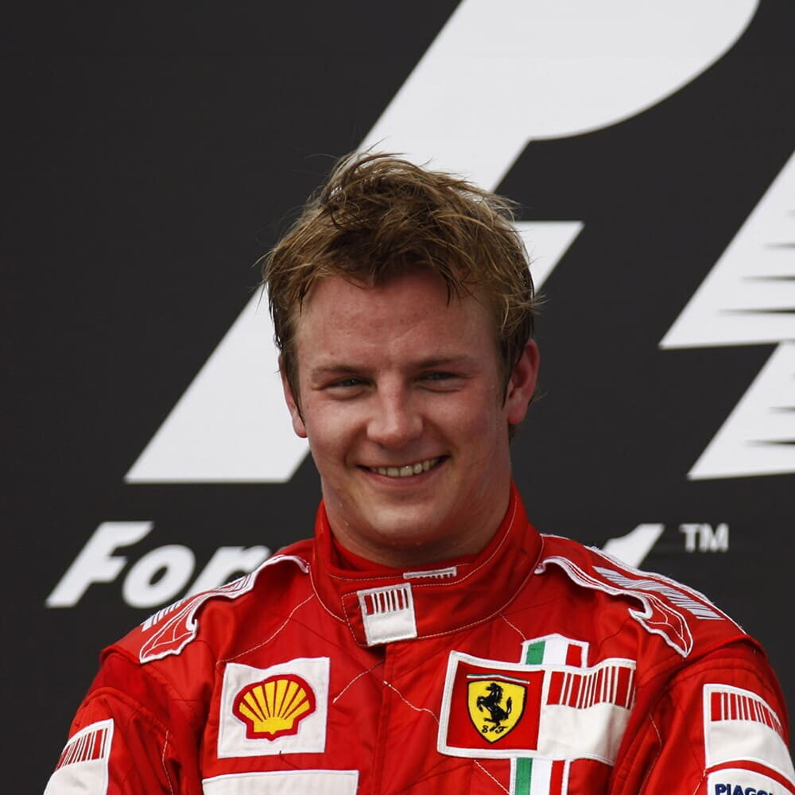
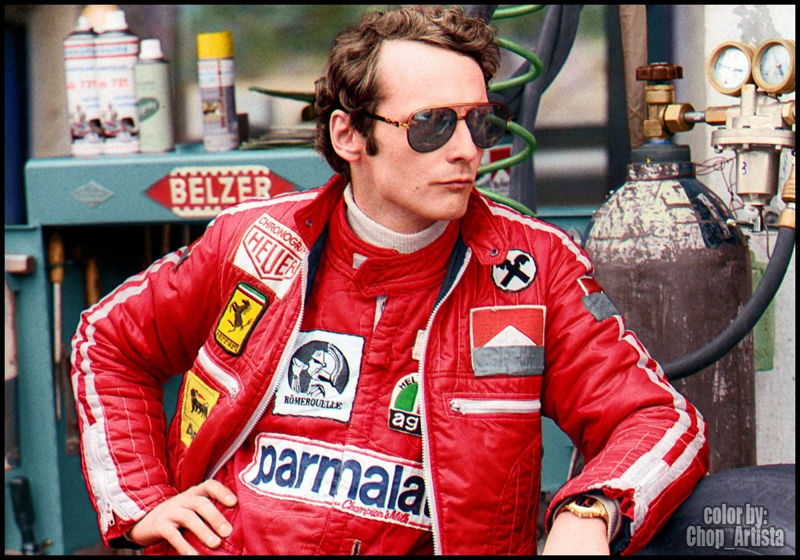
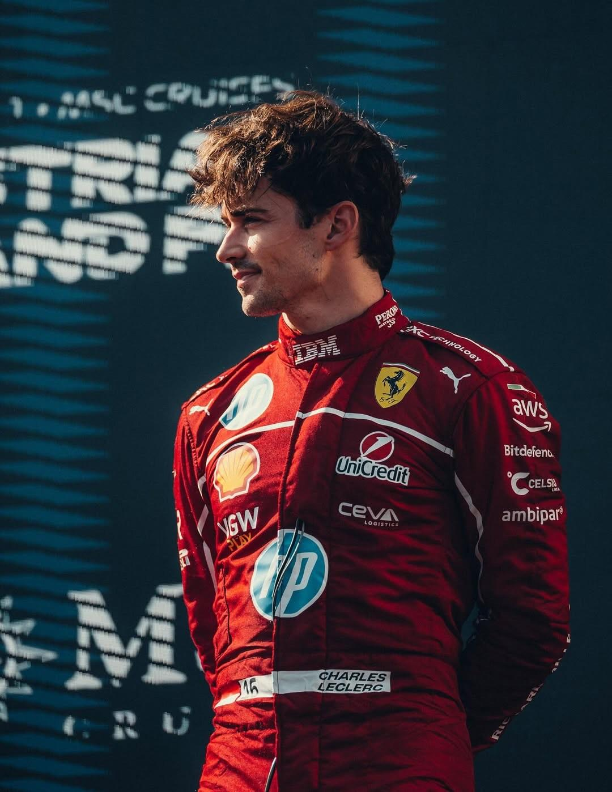

Michael Schumacher has won 5 World Drivers' Championships with Ferrari. He won 72 races and 58 poles in his 5 season tenure with Ferrari. He is often considered to be one of the best drivers in the history of Formula 1

Kimi Raikonnen had two stints with Ferrari (2007-2009 and 2014-2018) and won his only World Drivers' Championship with Ferrari on 2007. He has 10 race wins, 7 pole positions and 52 podiums

Niki Lauda raced for Scuderia Ferrari from 1974 to 1977, achieving two World Drivers' Championships. He had 15 race wins, 32 podiums and 23 poles.

Charles Leclerc is the most famous Ferrari driver in the modern era. Having 8 race wins, 48 podiums and 27 poles he is nicknamed as "Il Predestinato" (The Predestined)